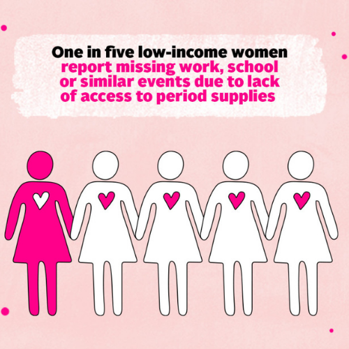

Period poverty describes the struggle many low-income women and girls face while trying to afford menstrual products. The term also refers to the increased economic vulnerability women and girls face due the financial burden posed by menstrual supplies. These include not only menstrual pads and tampons, but also related costs such as pain medication and underwear.Period poverty does not only affect women and girls in developing countries; it also affects women in wealthy, industrialized countries. Difficulty affording menstrual products can cause girls to stay home from school and work, with lasting consequences on their educations and economic opportunities. It can also exacerbate existing vulnerabilities, pushing women and girls closer toward dangerous coping mechanisms. Studies in Kenya, for example, have shown that some schoolgirls have engaged in transactional sex to pay for menstrual products.Period poverty is not only an economic issue, but a social and political one as well. For instance, some advocates have called for menstruation products to be taxation exempt. Such efforts in India have resulted in the elimination of tax on menstrual pads and tampons.
An estimated 70 percent of all reproductive diseases are caused by poor menstrual hygiene. Women often use dirty rags as a replacement for sanitary pads. Even rags that are cleaned can still develop bacteria if not dried properly. Furthermore, 63 million adolescent girls in India, do not have access to a toilet in their homes. Without a clean and private space to change menstrual products, girls are less likely to properly manage their own hygiene
Menstruation is often seen as a shameful conversation. Studies estimate that 71 percent of girls have no knowledge about menstrual health until after their first period. Women are often described as “dirty” while menstruating and are commonly separated in the home when dining, praying or participating in other activities. Some studies suggest that this is due to gender norms that become more prevalent at puberty. In addition, there is no required curriculum surrounding menstrual health in school.
Period poverty is the expense of menstrual products. Approximately 70.62 million people in India live in extreme poverty on less than $1.90 dollars per day. The average Indian woman needs 300 rupees ($4.20) per month for menstrual products. For low-income households, the cost of sanitary pads is often unattainable. Furthermore, Since most adolescents do not have access to toilets at home, girls are more likely to pay for restrooms in public, which is another unaffordable expense.
It has been estimated that 1 out of 5 girls drop out of school after they start menstruating.On average, girls miss six days of class each month due to shame surrounding their periods or a lack of sanitary products. This contributes to the number of girls who drop out of school each year, around 23 percent. Girls that leave school are stunted in their careers and are more likely to become child brides. India has the highest number of child brides in the world, with 15.5 million children being married by the age of 18.